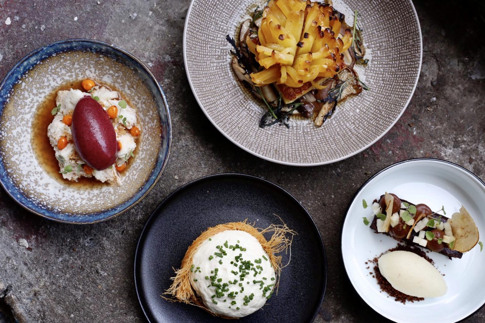
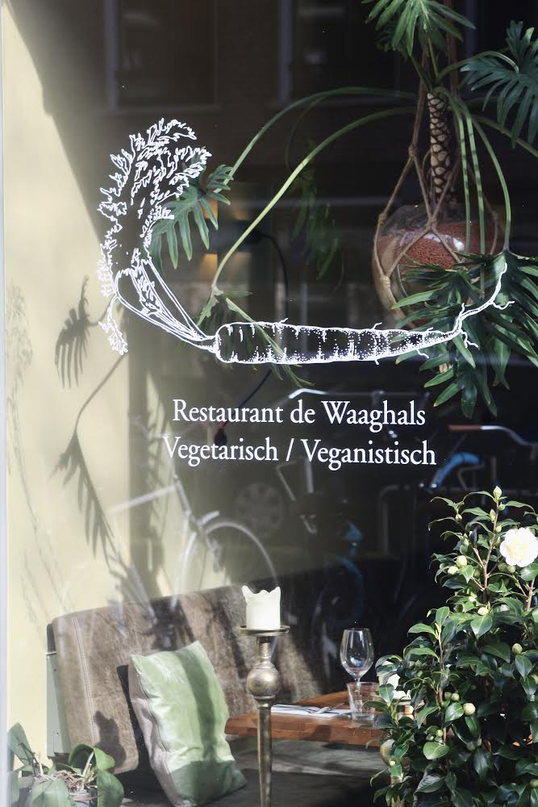

De Waaghals
Vegan fine dining midden in De Pijp. Sinds 1981 koken we hier met liefde en creativiteit met groenten.
Woensdag tot en met zondag vanaf 17:00
Welkom bij De Waaghals
Midden in De Pijp vind je De Waaghals, een vegan fine dining restaurant in Amsterdam waar al sinds 1981 met liefde en creativiteit wordt gekookt met groenten.
Al meer dan 45 jaar laten we zien hoe verrassend, verfijnd en smaakvol een plantaardige keuken kan zijn. Sinds 2017 zetten Eva & Martijn deze bijzondere traditie voort, met respect voor het verleden en een frisse blik op de toekomst.
Bij De Waaghals draait alles om smaak, creativiteit en het ritme van de seizoenen. We werken zoveel mogelijk met verse, lokale ingrediënten en kiezen bewust voor duurzame producten en werkwijzen. Onder leiding van chef Henrique ontstaat een keuken waarin klassieke technieken en moderne invloeden samenkomen tot verfijnde gerechten die groenten in de hoofdrol zetten.
Om de ervaring compleet te maken schenken we een zorgvuldig samengestelde selectie biologische, biodynamische en natuurwijnen, die iedere gang begeleiden.
Of je nu bewust kiest voor plantaardig, nieuwsgierig bent naar vegan gastronomie of simpelweg op zoek bent naar een bijzonder restaurant in Amsterdam: bij De Waaghals staat smaak altijd op de eerste plaats. Wij kijken ernaar uit je binnenkort te verwelkomen.

1981 Sindsdien wordt hier plantaardig gekookt
2017 Eva & Martijn zetten de traditie voort
Reserveren
Reserveren wordt aanbevolen, vooral op vrijdag en zaterdag. Reserveer online, bel ons tijdens openingstijden of mail ons buiten openingstijden.
Bel 020 679 9609 Mail reserveringen@waaghals.nl
Tijd aan tafel
We reserveren de tafel voor ongeveer 2,5 uur. Bij grotere menu's (5 of 6 gangen) houden we rekening met een langere dinertijd.
Binnenlopen
Ook zonder reservering ben je welkom als er een tafel vrij is. Binnenlopen kan tot 21:30.
Terras
Bij mooi weer zitten we ook buiten, op het terras aan de voorkant. Tafels op het terras kun je niet reserveren.
Allergieën
We doen ons uiterste best om rekening te houden met allergieën en dieetwensen. We werken zorgvuldig om kruisbesmetting te voorkomen, maar in de keuken wordt met verschillende allergenen gewerkt, dus we kunnen niets volledig uitsluiten. Bij gecompliceerde allergieën vragen we je om altijd vooraf contact met ons op te nemen.
Met een groep
Groepen van 7 tot maximaal 50 personen zijn van harte welkom. Je kiest een menu van 3, 4, 5 of 6 gangen; groepen krijgen hetzelfde menu als onze andere gasten.
Voor reserveringen van meer dan 7 personen vragen we een aanbetaling van € 25 per persoon. Het aantal personen kun je tot 24 uur van tevoren wijzigen. Bij grote groepen worden de menu's vooraf betaald.
Cadeaubon
Iemand trakteren op een avond bij De Waaghals? Een cadeaubon koop je eenvoudig online via onze website. In het restaurant zelf zijn cadeaubonnen niet te koop.
Werken bij De Waaghals
Op dit moment hebben wij geen openstaande vacatures. Ben jij enthousiast over De Waaghals en denk je dat je goed binnen ons team past? Dan horen we graag van je! Je weet tenslotte nooit wat de toekomst brengt. Stuur je cv en een korte motivatie naar info@waaghals.nl. We maken graag kennis met je en bewaren je sollicitatie voor toekomstige vacatures.
Veelgestelde vragen
Reserveringen
Moet ik reserveren?
Reserveren wordt aanbevolen, vooral op vrijdag en zaterdag. Je kunt eenvoudig online reserveren via onze website.
Kan ik zonder reservering binnenlopen?
Ja, wanneer er een tafel beschikbaar is ben je van harte welkom.
Hoe lang heb ik mijn tafel?
Voor de meeste reserveringen hebben we een tafelduur van ongeveer 2,5 uur. Voor grotere menu's (5- of 6-gangen) houden we uiteraard rekening met een langere dinertijd.
Hebben jullie een terras?
Ja, wij hebben een gezellig terras aan de voorkant van het restaurant.
Kan ik een tafel op het terras reserveren?
Nee. Ons terras is beschikbaar op basis van beschikbaarheid.
Menu
Werken jullie met een à-la-cartemenu?
Nee. Wij serveren uitsluitend verrassingsmenu's, standaard drie of vier gangen, maar bij grotere groepen kunnen we ook vijf tot zes gangen serveren.
Is De Waaghals volledig plantaardig?
Ons verrassingsmenu is volledig plantaardig. Alleen ons kaasplateau bevat zuivel.
Verandert het menu regelmatig?
Ja. Onze chef werkt met seizoensproducten, waardoor het menu regelmatig verandert.
Gebruiken jullie vleesvervangers?
Nee. Onze keuken draait om groenten, peulvruchten, granen, fermentaties en andere natuurlijke ingrediënten. We maken dus geen gebruik van plantaardige "burgers" of nepgehakt.
Allergieën & dieetwensen
Kunnen jullie rekening houden met allergieën?
In veel gevallen wel. Geef allergieën of dieetwensen altijd vooraf door bij je reservering.
Kunnen jullie glutenvrij koken?
We hebben verschillende glutenvrije alternatieven. Omdat we in dezelfde keuken met gluten werken, kunnen we kruisbesmetting niet volledig uitsluiten.
Ik heb een notenallergie. Kan ik bij jullie eten?
Vaak wel. Geef dit altijd vooraf aan, zodat onze keuken kan beoordelen wat mogelijk is.
Kunnen jullie rekening houden met meerdere allergieën tegelijk?
Dat hangt af van de combinatie van allergieën. Neem vooraf contact met ons op, zodat we kunnen bespreken wat mogelijk is.
Wijn
Hebben jullie een wijnarrangement?
Ja. Bij ieder menu kun je kiezen voor een zorgvuldig samengesteld wijnarrangement.
Hebben jullie een alcoholvrije pairing?
We serveren verschillende alcoholvrije dranken, maar we hebben geen speciaal arrangement dat aansluit bij het menu. Uiteraard staat ons team voor je klaar om je te helpen bij goed passende dranken.
Serveren jullie natuurwijnen?
Ja. Onze wijnkaart bestaat uit een selectie van biologische, biodynamische en natuurwijnen.
Groepen
Kan ik met een grote groep reserveren?
Ja. Groepen zijn van harte welkom, wij kunnen maximaal 50 personen in het restaurant kwijt.
Vanaf hoeveel personen geldt een groepsmenu?
Wij serveren hetzelfde menu aan groepen als aan "gewone" reserveringen.
Vragen jullie een aanbetaling?
Ja. Voor groepen vanaf zeven personen vragen wij een aanbetaling van € 25 per persoon.
Praktische informatie
Zijn honden welkom?
Goed opgevoede honden zijn welkom, zolang ze andere gasten niet storen.
Ik ben jarig. Kunnen jullie iets regelen?
Ja. Laat het ons weten; wij kunnen bijvoorbeeld een kaarsje bij het dessert verzorgen.
Verkopen jullie cadeaubonnen?
Ja. Cadeaubonnen zijn verkrijgbaar via onze website. In het restaurant zijn ze niet te koop.
Zijn kinderen welkom?
Ja, van harte welkom. We serveren wel een verrassingsmenu; er is geen apart kindermenu.
Is het restaurant rolstoeltoegankelijk?
Ja. Er is een afstap vanaf de straat, maar hiervoor hebben we een speciale oprijplaat, geschikt voor rolstoelen en scootmobielen.
Kan ik contant betalen?
Nee, bij ons betaal je alleen met je pas of kaart.
Bereikbaarheid
Waar ligt De Waaghals?
Aan de Frans Halsstraat 29 in De Pijp, op korte loopafstand van de Albert Cuypmarkt.
Kan ik in de buurt parkeren?
Niet in de Frans Halsstraat zelf; er zijn diverse parkeergarages in de buurt. Overal geldt betaald parkeren.
Kan ik met de metro komen?
Ja. Metrostation De Pijp en metrostation Vijzelgracht liggen beide op enkele minuten lopen.
Contact
Restaurant De WaaghalsFrans Halsstraat 29
1072 BK Amsterdam
- Bellen
- 020 679 9609 tijdens openingstijden
- Reserveringen
- reserveringen@waaghals.nl
- Overig en sollicitaties
- info@waaghals.nl
- Metro
- De Pijp of Vijzelgracht, enkele minuten lopen